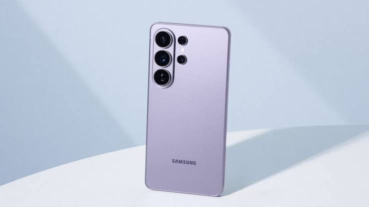

Conocé el Samsung Galaxy s27
El Samsung Galaxy s27 es un teléfono celular pensado para quienes buscan un dispositivo práctico para comunicarse, estudiar, trabajar y disfrutar de sus aplicaciones favoritas.

Características principales
- Pantalla amplia y colorida.
- Cámaras para sacar fotos y grabar videos.
- Batería de larga duración.
- Lector de huellas digitales.
- Conexión Wi-Fi y Bluetooth.
- Sistema operativo Android.
Información técnica
| Característica | Descripción |
|---|---|
| Pantalla | 6,5 pulgadas |
| Memoria RAM | Según la versión del equipo |
| Almacenamiento | Según la versión del equipo |
| Cámara principal | Sistema de varias cámaras |
| Batería | 5000 mAh |
| Sistema operativo | Android |
Ventajas del producto
- Es útil para estudiar y trabajar.
- Permite utilizar redes sociales y aplicaciones.
- Cuenta con una batería de gran capacidad.
- Permite realizar videollamadas y navegar por Internet.
- Su diseño es moderno y práctico.
Información comercial
El Samsung Galaxy s27 se puede encontrar en comercios de tecnología y tiendas oficiales.
Precio: consultar en el comercio.
Medios de pago: consultar disponibilidad.
Garantía: consultar las condiciones ofrecidas por el vendedor.
Información complementaria
Antes de comprar un celular, es importante comparar sus características, memoria, precio y garantía para elegir el equipo que mejor se adapte a nuestras necesidades.
Para conocer más detalles del producto, podés visitar el sitio oficial de Samsung.
Contacto y consultas
Si estás interesado en comprar este producto, podés consultar su disponibilidad y precio en una tienda de tecnología.